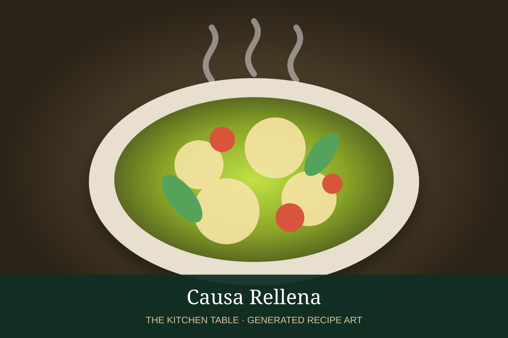

← Back to all recipes
APPETIZER · PERUVIAN
Causa Rellena
Chilled layers of ají amarillo-seasoned yellow potato filled with chicken or tuna salad and avocado.
1 hr + chillServes 6

Photo: Free Walking Tours Peru
Ingredients
- 2 lb yellow potatoes or Yukon Gold potatoes
- 3 tbsp ají amarillo paste
- Juice of 2 limes
- 3 tbsp neutral oil
- Salt
- 2 cups shredded cooked chicken or drained tuna
- 1/3 cup mayonnaise
- 1 ripe avocado, sliced
- 2 hard-boiled eggs, sliced
- Black olives, for garnish
- Lettuce, optional
Preparation
- Boil potatoes until tender. Peel and pass through a ricer or mash until smooth.
- While still warm, mix potatoes with ají amarillo, lime juice, oil, and salt. Cool completely.
- Mix chicken or tuna with mayonnaise and season lightly.
- Press half the potato mixture into a mold or dish, add avocado and filling, then top with remaining potato.
- Chill at least 30 minutes.
- Unmold or slice and garnish with egg, olives, and lettuce.